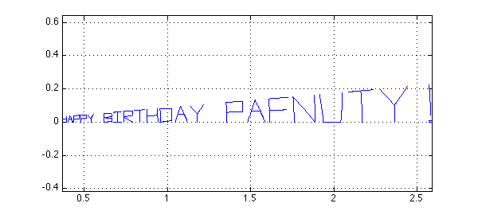
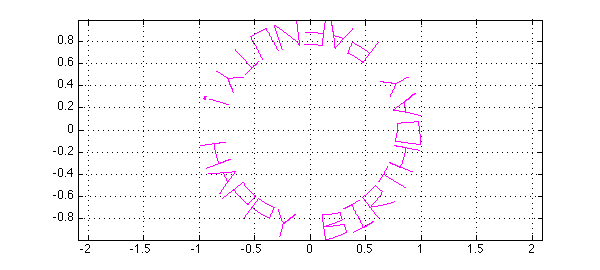

Chebfun's scribble command was introduced for entertainment, but it turns out to be surprisingly useful also illustrating complex variables. Suppose for example it is Chebyshev's birthday and you want to send him a card:
s = scribble('Happy Birthday Pafnuty!');
LW = 'linewidth'; lw = 1.8;
plot(s,'-',LW,lw)
xlim([-1.1 1.1]), axis equal, grid on
This chebfun s is a a piecewise linear complex funtion of a real variable, as we can see by writing it without the semicolon:
s
s =
chebfun column (89 smooth pieces)
interval length endpoint values
[ -1, -0.98] 2 complex values
[ -0.98, -0.96] 2 complex values
[ -0.96, -0.93] 2 complex values
[ -0.93, -0.91] 2 complex values
[ -0.91, -0.89] 2 complex values
[ -0.89, -0.87] 2 complex values
[ -0.87, -0.84] 2 complex values
[ -0.84, -0.82] 2 complex values
[ -0.82, -0.8] 2 complex values
[ -0.8, -0.78] 2 complex values
[ -0.78, -0.75] 2 complex values
[ -0.75, -0.73] 2 complex values
[ -0.73, -0.71] 2 complex values
[ -0.71, -0.69] 2 complex values
[ -0.69, -0.66] 2 complex values
[ -0.66, -0.64] 2 complex values
[ -0.64, -0.62] 2 complex values
[ -0.62, -0.6] 2 complex values
[ -0.6, -0.57] 2 complex values
[ -0.57, -0.55] 2 complex values
[ -0.55, -0.53] 2 complex values
[ -0.53, -0.51] 2 complex values
[ -0.51, -0.48] 2 complex values
[ -0.48, -0.46] 2 complex values
[ -0.46, -0.44] 2 complex values
[ -0.44, -0.42] 2 complex values
[ -0.42, -0.39] 2 complex values
[ -0.39, -0.37] 2 complex values
[ -0.37, -0.35] 2 -0.39 -0.32
[ -0.35, -0.33] 2 -0.32 -0.36
[ -0.33, -0.3] 2 complex values
[ -0.3, -0.28] 2 complex values
[ -0.28, -0.26] 2 complex values
[ -0.26, -0.24] 2 complex values
[ -0.24, -0.21] 2 complex values
[ -0.21, -0.19] 2 complex values
[ -0.19, -0.17] 2 complex values
[ -0.17, -0.15] 2 complex values
[ -0.15, -0.12] 2 complex values
[ -0.12, -0.1] 2 complex values
[ -0.1, -0.079] 2 complex values
[ -0.079, -0.056] 2 complex values
[ -0.056, -0.034] 2 complex values
[ -0.034, -0.011] 2 complex values
[ -0.011, 0.011] 2 complex values
[ 0.011, 0.034] 2 complex values
[ 0.034, 0.056] 2 complex values
[ 0.056, 0.079] 2 complex values
[ 0.079, 0.1] 2 complex values
[ 0.1, 0.12] 2 complex values
[ 0.12, 0.15] 2 complex values
[ 0.15, 0.17] 2 complex values
[ 0.17, 0.19] 2 complex values
[ 0.19, 0.21] 2 complex values
[ 0.21, 0.24] 2 complex values
[ 0.24, 0.26] 2 complex values
[ 0.26, 0.28] 2 complex values
[ 0.28, 0.3] 2 complex values
[ 0.3, 0.33] 2 complex values
[ 0.33, 0.35] 2 complex values
[ 0.35, 0.37] 2 complex values
[ 0.37, 0.39] 2 complex values
[ 0.39, 0.42] 2 complex values
[ 0.42, 0.44] 2 complex values
[ 0.44, 0.46] 2 complex values
[ 0.46, 0.48] 2 complex values
[ 0.48, 0.51] 2 complex values
[ 0.51, 0.53] 2 complex values
[ 0.53, 0.55] 2 complex values
[ 0.55, 0.57] 2 complex values
[ 0.57, 0.6] 2 complex values
[ 0.6, 0.62] 2 complex values
[ 0.62, 0.64] 2 complex values
[ 0.64, 0.66] 2 complex values
[ 0.66, 0.69] 2 complex values
[ 0.69, 0.71] 2 0.66 0.71
[ 0.71, 0.73] 2 complex values
[ 0.73, 0.75] 2 complex values
[ 0.75, 0.78] 2 complex values
[ 0.78, 0.8] 2 complex values
[ 0.8, 0.82] 2 complex values
[ 0.82, 0.84] 2 complex values
[ 0.84, 0.87] 2 complex values
[ 0.87, 0.89] 2 complex values
[ 0.89, 0.91] 2 complex values
[ 0.91, 0.93] 2 0.94 0.95
[ 0.93, 0.96] 2 complex values
[ 0.96, 0.98] 2 complex values
[ 0.98, 1] 2 complex values
Epslevel = 1.110223e-15. Vscale = 1.003774e+00. Total length = 178.
Since s is a chebfun, we can apply functions to it. For example, here is exp(s):
plot(exp(s),'b',LW,lw), axis equal, grid on

Here is exp(3i*s):
plot(exp(3i*s),'m',LW,lw), axis equal, grid on

Playing around with different functions is a good way to learn about complex variables, and a good way to make greeting cards. Here are a couple more with axes turned off for greater beauty.
plot(exp((1+1i)*s),'g',LW,lw), axis equal, axis off snapnow plot(sinh(3*s),'r',LW,lw), axis equal, axis off